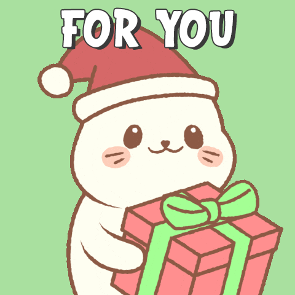
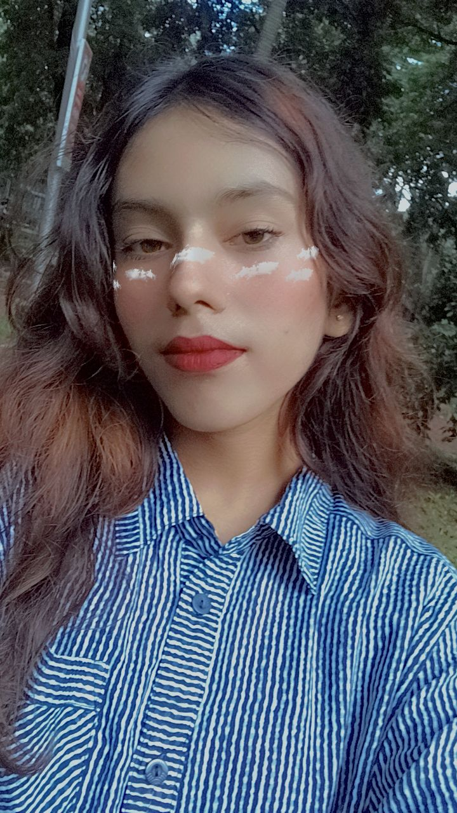

Hey Porsho,
So, first things first – Happy Freakin’ Birthday! 🎉
!
Let me drop down on one knee (not to propose yet lol, chill) but to apologize from the bottom of my dumbass forgetful heart. I seriously thought your birthday was in December – either my memory was on airplane mode or my brain was too busy simping over your sweet ass. Either way, I’m sorry.
But hey, I didn’t forget you, never. You're not the kind of person anyone forgets. You got that soft chaos, kind chaos – like a sunflower growing in the middle of a damn battlefield. 🌻
It honestly meant the world when you messaged me outta nowhere and said sorry for missing my birthday – like, damn, girl... I must’ve lived rent-free in your head for months, huh? 😏 We picked up talking again like no time had passed, and now, here we are. Back like we never left.
You’ve become something special to me, Porsho. Like... permanent. Not a "when I’m free" kind of best friend – more like a “you’re part of my weird little life now” kind. And despite our different countries, timezones, crazy busy lives, and your occasional vanishing like a ninja, I feel lucky as hell to have you around.
I’m also so sorry about your mom. I can’t even imagine how heavy that must be on your heart. But I know this – you’ve got the strength of a damn lioness, and she’s got a badass daughter by her side, so she’s in the best hands. I pray she heals completely and lives a long, healthy life. You both deserve that. Sending strength, love, and a big virtual hug to your whole fam. 🤍
And about the gift thing... yeah, I hate that I can’t send you something nice right now. But one day, I will. Something small but full of meaning. A token of this wild, sweet, ridiculous, beautiful connection we got. Until then, let this letter be my gift. A lil messy, a lil sweet, a lil romantic. Like us.
So here's to you:
May your days be brighter than your sass,
Your nights warmer than my voice note at 2 AM,
Your dreams as big as your heart,
And your birthday better than all the chocolate in Dhaka. 🍫
Stay kind. Stay beautiful. Stay mine (as my bestie, or something more if you ever feel like it 😏).
Happy belated birthday, my sunshine.
With all my love,
Haze